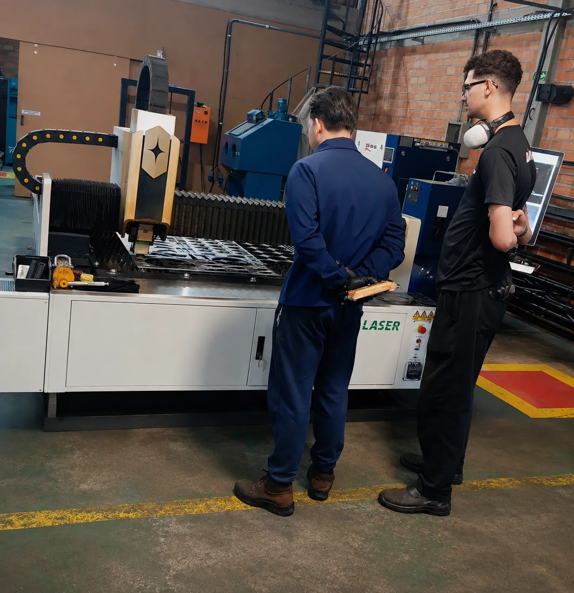

Corte láser de metales en São José dos Pinhais
Corte de chapas y componentes metálicos para proyectos industriales, mantenimiento, fabricación de máquinas, estructuras metálicas, construcción y aplicaciones según plano.
De la necesidad al componente fabricado.
Los proyectos de CF Industrial pueden partir de un plano, muestra, pieza existente, foto o una necesidad todavía por definir. Reunimos la información necesaria para proponer un proceso de fabricación adecuado.
Para agilizar el presupuesto, indique material, medidas, cantidad, finalidad y plazo. Incluya planos, archivos técnicos o referencias visuales cuando estén disponibles.

Qué se puede desarrollar con este proceso.
Bases y soportes
Bridas y paneles
Chapas y componentes de máquinas
Piezas para mantenimiento
Recambios
Estructuras y componentes según plano
Información técnica antes de la fabricación.
Recepción del plano, archivo, foto o referencia
Validación del material, medidas y cantidad
Definición técnica del corte y aprovechamiento de la chapa
Corte de piezas e inspección visual
Integración con otros procesos cuando corresponda
Aplicaciones en distintos sectores de actividad.
Corte láser de metales en São José dos Pinhais y la región de Curitiba.
CF Industrial está en São José dos Pinhais, Paraná, y atiende Curitiba, su área metropolitana y otras localidades según el proyecto.
Para evitar demoras en el presupuesto, envíe toda la información disponible sobre la pieza o aplicación.
Para solicitar presupuesto
- Servicio deseado
- Material
- Medidas y espesores relevantes
- Cantidad
- Plano, archivo o foto
- Plazo previsto
Preguntas sobre corte láser de metales.
¿Qué debo enviar para solicitar presupuesto de corte láser?
Siempre que sea posible, indique material, espesor, medidas, cantidad y plazo. Los archivos vectoriales o planos técnicos facilitan el análisis. Si no tiene plano, envíe una foto, croquis o referencia.
¿CF Industrial ofrece corte láser para clientes de Curitiba?
Sí. CF Industrial está en São José dos Pinhais y atiende Curitiba, su área metropolitana y otras localidades según el proyecto.
¿Es posible fabricar una pieza a partir de una muestra?
La viabilidad depende de la geometría y de la información disponible. Envíe fotos, medidas o la pieza de referencia para que el equipo evalúe el mejor proceso de fabricación.
¿CF Industrial realiza únicamente el corte?
El alcance puede incluir solo el corte o combinar otros procesos disponibles, como mecanizado, soldadura y fabricación, según el proyecto.
¿Necesita corte láser de metales?
Envíe su plano, medidas, cantidad o referencia y solicite un análisis para presupuesto.